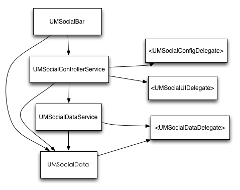

UMSocial_SDK Reference
<!doctype html>
关于友盟社交组件
友盟社交组件（UMSocial SDK）帮助你在app中方便地集成社交功能。集成此SDK之后，你将可以在app中得到分享到五大主流sns平台、添加评论、添加喜欢、微博账号管理等功能，并能够在友盟后台报表中查看每天每个用户行为的详细统计情况。
组件功能
友盟社交组件主要提供下面几个功能：分享到微博和账户管理、评论、喜欢
分享到微博
客户端分享到微博一般要下载微博客户端sdk，如果要分享到多个微博则要下载多个微博平台。而我们sdk采用的是在云端做分享，即你只需要简单集成我们一个sdk即可分享到五个主流sns平台的功能。微博分享的功能有：
- 多平台 现在支持新浪微博、腾讯微博、QQ空间、人人网、豆瓣五个微博平台
- 分享内容 你可以使用不同的标示符来创建分享内容，例如在应用针对不同的文章、不同的图片、不同页面做分享
- 分享统计 你可以在我们网站看到用户对不同内容的分享的统计情况
- 各层次的分享接口 你可以使用界面API，方便地集成分享功能，也可以使用底层的数据API，自己定制UI
- 微博账户 你可以得到用户在所有平台授权之后的账户信息
评论
评论是指用户使用匿名或者微博账号来发评论到友盟的服务器，评论的主要功能有：
- 评论内容 你可以使用不同的标示符来创建评论内容，例如在应用针对不同的文章、不同的图片、不同页面做评论
- 评论统计 同样你可以在我们网站看到用户对不同内容评论的统计情况
- 各层次的评论接口 你可以使用界面API方便地集成评论，也可以利用数据API自己定制UI地方法来灵活地使用评论
喜欢
喜欢就是用户按喜欢按钮，服务器对这个喜欢内容做计数的功能，喜欢的主要功能有：
- 喜欢内容和统计 你可以像分享和评论一样，针对不同的内容来做喜欢，同样可以在网站查看用户喜欢统计情况
- 各层次的喜欢接口 你可以使用底层喜欢接口，自己定义的UI界面，显示“顶”、“踩”等等。
组件使用

友盟社交组件主要有3个层次的接口，最底层的负责直接发送数据的UMSocialDataService，利用此底层数据接口，创建的一些界面和操作，是UMSocialControllerService，集成这些界面API，创建了一个集成所有功能的工具栏UMSocialBar。
UMSocialDataService、UMSocialControllerService、UMSocialBar的创建都需要一个UMSocialData对象，通过UMSocialData，你可以对不同内容设置一个标示符字符串，并针对此内容设置不同的分享文字、图片，查看各自的分享数、评论数等。
UMSocialDataService和UMSocialData用到的一个<UMSocialDataDelegate>的协议，可以利用此协议的方法得到网络请求成功与否，和想要请求的数据。
UMSocialController用到的是<UMSocialUIDelegate>和<UMSocialConfigDelegate>协议，分别可以对捕捉到一些界面操作，和对界面进行设置。